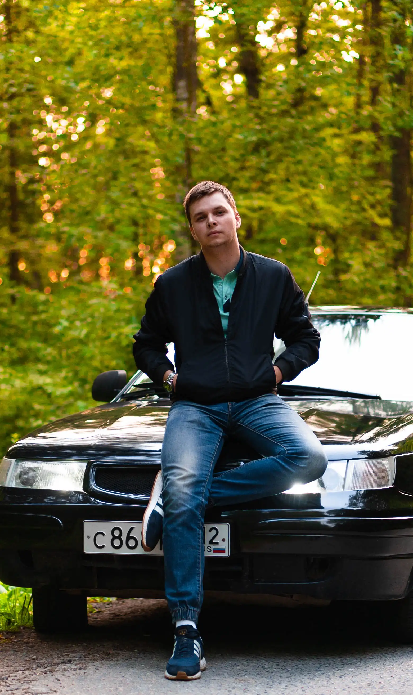

Кейс: съёмка автомобиля для продажи
Задача: показать состояние и характер авто в объявлении и соцсетях.
Результат: полный набор ракурсов и деталей, визуально целостная серия для карточек и сторис.
JXSTCALLMESANYA
Фотограф · Йошкар-Ола, Казань, Чебоксары
Съёмка с высоким контрастом и кинематографичной эстетикой. Для брендов, частных клиентов и мероприятий.
Автомобильная съёмка для личных коллекций, предпродажи и брендов. Больше SEO-информации и примеров — на отдельной странице услуги.
Репортажная съёмка мероприятий, backstage и событий. Подробности и FAQ — на странице репортажной съёмки.

Creative Photographer
Sony A7 III / Tamron 28-75 G2
Автомобильный и репортажный фотограф. Помогаю передать характер человека, бренда или автомобиля через контраст, динамику и внимание к деталям.
Задача: показать состояние и характер авто в объявлении и соцсетях.
Результат: полный набор ракурсов и деталей, визуально целостная серия для карточек и сторис.
Задача: передать атмосферу без постановки и не мешать гостям.
Результат: серия живых кадров с акцентом на эмоции, динамику и свет.
«Быстро нашли общий визуальный язык. Получили кадры, которые смотрятся как часть кампании.»
«Комфортный процесс на съёмке и очень сильная финальная подборка.»
от 3 000 ₽
от 5 000 ₽
по запросу
Точная стоимость зависит от сложности, локации и целей съёмки.
Обычно превью отправляю быстро, а финальные кадры — в согласованные сроки после съёмки.
Да, до съёмки можно собрать референсы, выбрать локации и формат подачи под ваш запрос.
Да, доступны коммерческие съёмки для соцсетей, рекламы и контента бренда.